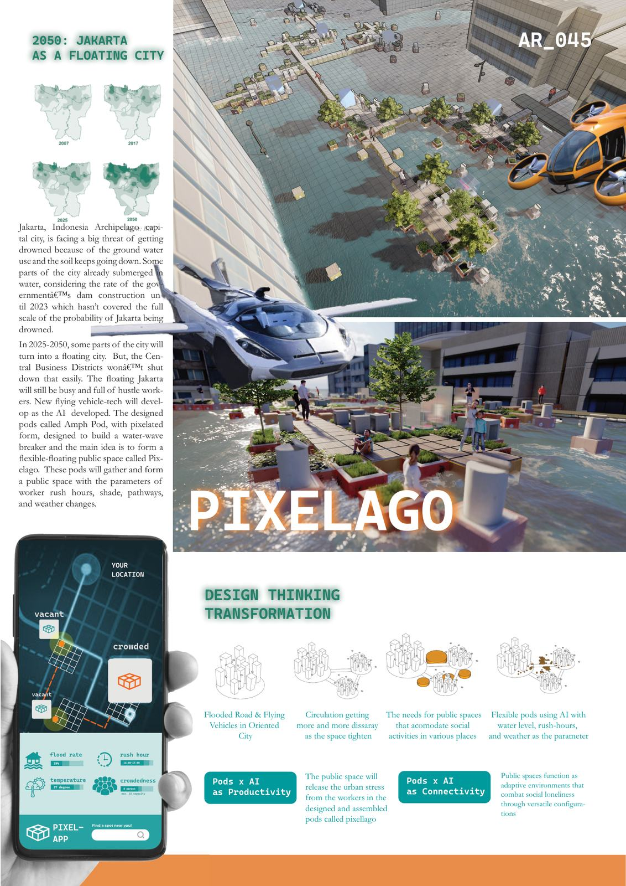

Competition · Public space, modules
Pixelating Archipelago
AFAIR UI 2024 Architecture Competition, "Resilient Horizons: Architecture to Connect Hope" · team of three
Jakarta in 2050 is a flooding city. About 75% of its area is predicted to sink, and the city grows on water. Life on land (trees, social space, vehicles) disappears while the offices stay, and the city splits into an upper and a lower world, physically and economically. Our entry asks how to join the two. Its answer is pixel-like modules at human scale that AI arranges into public space as the community's needs change.

3rd PrizeAFAIR UI 2024, Universitas Indonesia
2050Jakarta scenario, about 75% under water
AR_045entry code
4 Nov 2023open judging, FT UI, Depok
Approach
- Built a virtual context for the future first, then designed for it: how society responds to recurrent floods.
- Used AI's ability to arrange space as the logic of a modular system, so AI-generated space simulations become real public facilities.
- A phone app shows which modules are vacant or crowded, with the flood rate, temperature and rush hour.
Team
- Beta Nadhya M., Cikal Abyan N. and Renata Anindya, Department of Architecture, Universitas Gadjah Mada.
- Presented live at the open judging; 41-page presentation rendered in D5 Render.
D5 RenderModular design2023
